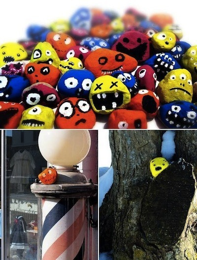

Sun, 06 Mar 2011 11:26:00 · Banksy · graffiti · arts
some wicked banksy inspired street art created by

Some wicked Banksy-inspired street art created by a 10-year old. Browse more here ~ http://t.co/NXrlKzw
Sun, 06 Mar 2011 11:26:00 · Banksy · graffiti · arts

Some wicked Banksy-inspired street art created by a 10-year old. Browse more here ~ http://t.co/NXrlKzw